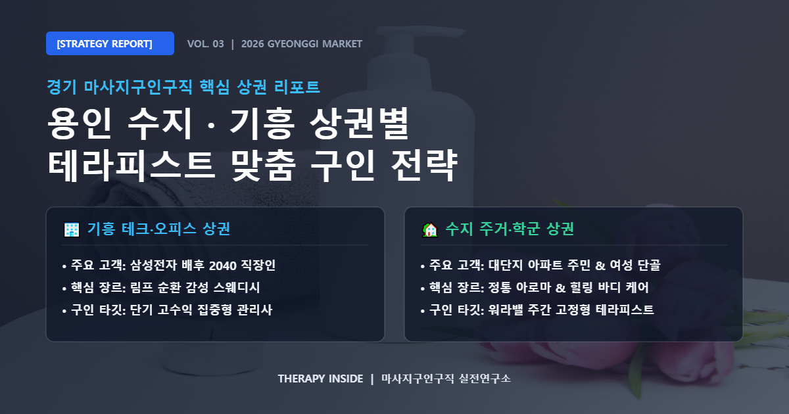

수도권 남부 웰니스 산업의 핵심 벨트로 떠오른 경기 마사지구인구직 시장에서 용인은 성남 분당, 수원 영통, 화성 동탄과 어깨를 나란히 하는 거대 배후 도시입니다. 특히 신분당선 중심의 탄탄한 학군·주거 배후지를 갖춘 수지구(수지구청·성복·동천)와 삼성전자 기흥사업장 및 플랫폼시티 개발 호재가 맞물린 기흥구(기흥역·구갈·동백)는 상권 성격과 주 고객층의 라이프스타일이 확연히 다릅니다.
하지만 많은 매장이 이러한 지역적 편차를 고려하지 않은 채 단순 급여 문구만 내세워 채용 난항을 겪고 있습니다. 안정적으로 우수한 관리사를 영입하고 장기 근속을 유도하기 위해서는 ‘매장의 주력 케어 프로그램(감성 스웨디시 vs 통증·체형 교정 및 아로마)’과 ‘용인 세부 상권의 지리적 특성’을 결합해 지원자의 니즈를 정밀하게 타깃팅해야 합니다.

삼성전자 기흥캠퍼스, ICT 연구단지, 기흥역 역세권 상권은 교대 근무자와 퇴근길 피로 해소를 원하는 2040 남성 직장인 비중이 매우 높습니다. 이들 상권에서는 부드러운 림프 순환과 스트레스 완화를 결합한 감성 스웨디시 및 로미로미 전문 샵의 예약 수요가 집중됩니다.
기흥역 도보 3분 역세권, 일 평균 4~6콜 균등 보장, 당일 전액 투명 정산, 초보자 1:1 맞춤 속성 코칭수지구청역 학원가, 대단지 아파트 밀집 지역은 학부모, 여성 고객, 고정적인 힐링을 원하는 전문직 주민이 단골층을 형성하고 있습니다. 감성 스웨디시보다는 정통 아로마 테라피, 건식 힐링 바디 케어, 통증 완화 림프 마사지의 선호도가 높습니다.
텃세 없는 공정 순번제, 야간 강요 없는 주간 고정 근무, 가사·육아 병행 유연 근무(파트타임 환영), 100% 사전 예약 건전 샵| 구분 | 🏢 기흥 테크·역세권 상권 (스웨디시 중심) | 🏡 수지 주거·학군 상권 (아로마·릴랙싱 중심) |
|---|---|---|
| 주요 고객군 | IT·반도체 직장인, 2040 전문직, 빠른 회전 고객 | 아파트 거주민, 주부 및 여성 고객, 정기 단골층 |
| 타깃 관리사 | 20대~30대 초반, 단기 고수익 및 역량 집중형 | 30대~50대, 안정적 워라밸 및 주간 고정 희망자 |
| 핵심 유인책 | 높은 배분율(5:5~6:4), 풍부한 콜수, 당일 즉시 지급 | 감정 소모 제로, 칼퇴근 보장, 차분하고 안정된 환경 |
| 공고 필수 기재 | 데스크의 고객 신원 인증, 프라이빗 휴게 시설 완비 | 투명한 순번제 운영, 룸 청소·세탁 잡무 분리 지원 |
"용인 상권 최고요지"라는 모호한 표현 대신, "수지구청역 2번 출구 도보 2분 거리로 대중교통 출퇴근이 매우 편리하며, 주간 단골 고객층의 매너가 정갈해 지명 인센티브 형성이 빠릅니다."와 같이 지원자의 하루 일과 관점에서 풀어주어야 합니다.
"100% 합법 건전 힐링 샵", "고객 방문 전 예약 번호 대조 시스템", "실장 상주 관리 및 비매너 고객 퇴실 매뉴얼"을 명시해 구직자가 느끼는 막연한 불안감을 해소해야 합니다.
"테라피스트님은 고객 케어와 본인의 컨디션 관리에만 전념하세요. 오일 타월 세탁과 룸 청소는 전담 스태프가 지원합니다."라는 안내 문구 하나만으로도 지원 전환율을 크게 높일 수 있습니다.
함께 읽어보면 좋은 경기권 취업 가이드